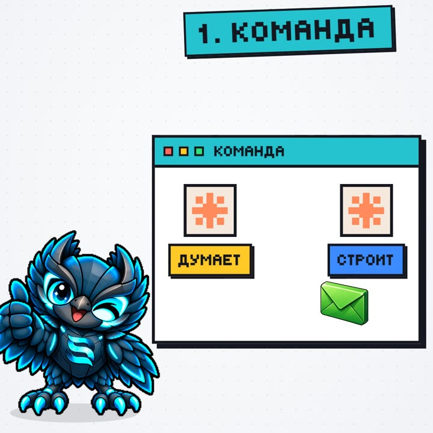

1
Два Claude в одной команде
Одна сессия планирует и проверяет, вторая строит. Работу они передают друг другу сами, а ты не бегаешь между окнами и не копируешь задания туда-сюда. В приложении Claude (вкладка Code) одна сессия умеет запустить другую и писать ей сообщения — это работает и без отдельного мода.
Скопируй и отправь в Claude Code
Давай работать в паре. Ты — планировщик: разбей мою задачу на шаги и проверяй результат. Запусти отдельную сессию-исполнителя, отправляй ей шаги сообщениями, принимай готовое и сообщи мне, когда всё будет сделано. Задача: [опиши задачу].
В терминальном Claude Code отдельных сессий нет — там он сделает то же через своих помощников-агентов.